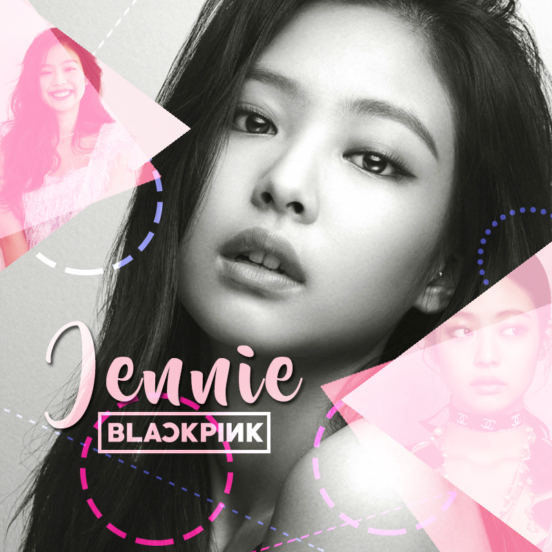

|
 |
About JennieJennie was born on January 16, 1996 in Cheongdam-dong, Gangnam-gu, Seoul, South Korea. She studied at Cheongdam Elementary School in Seoul, and then went to Auckland, New Zealand to study for five years, studying at Waikawai Intermediate School and ACG Parnell College. In 2006, he filmed the MBC documentary "English", which recorded the methods of Koreans to strengthen their English skills and cultural exchanges abroad. After high school, he returned to Korea and transferred to Seoul Cheongdam Middle School. After graduation, he went to Seoul Cheongdam High School.Back |